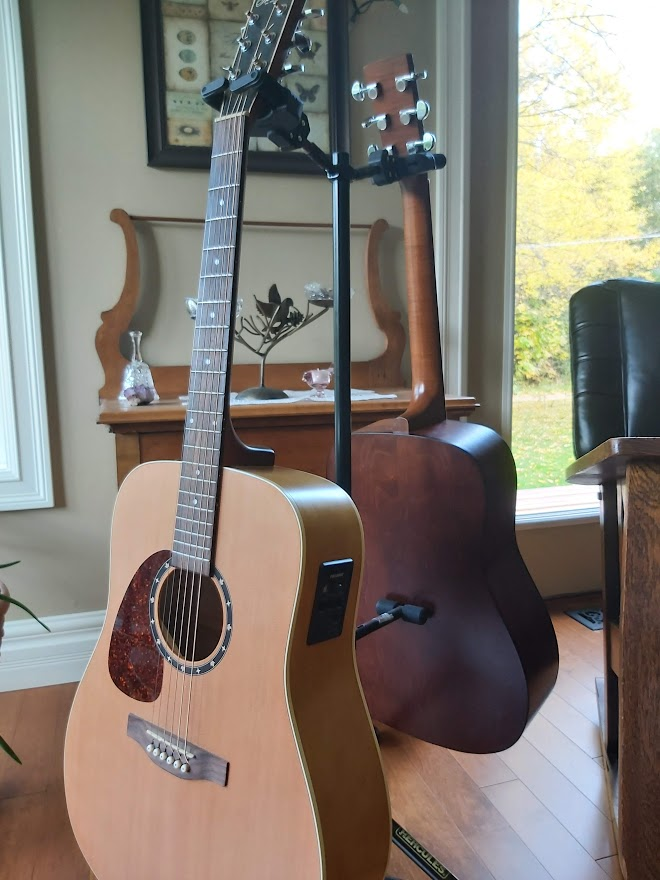
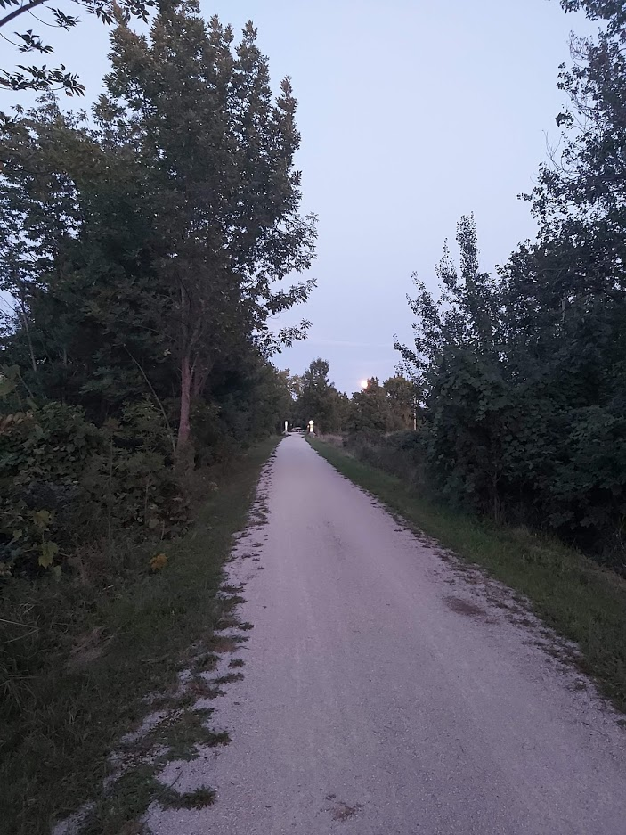
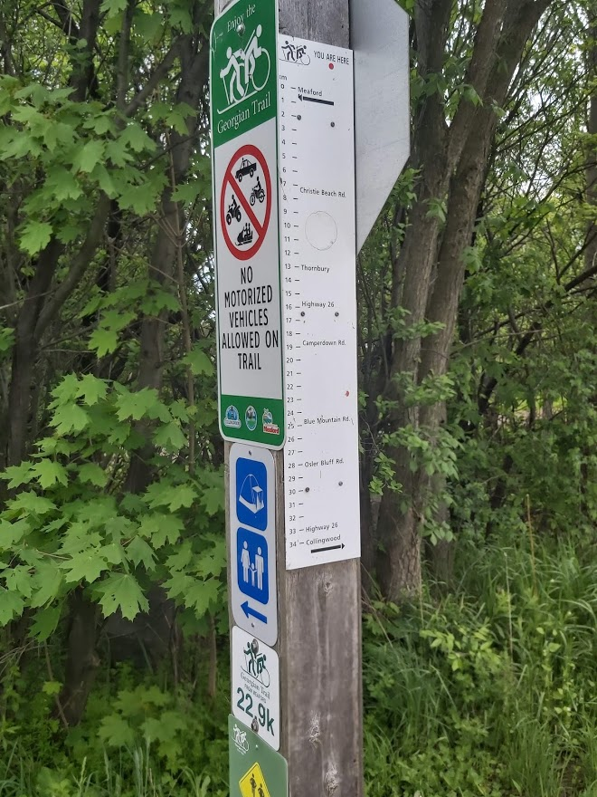
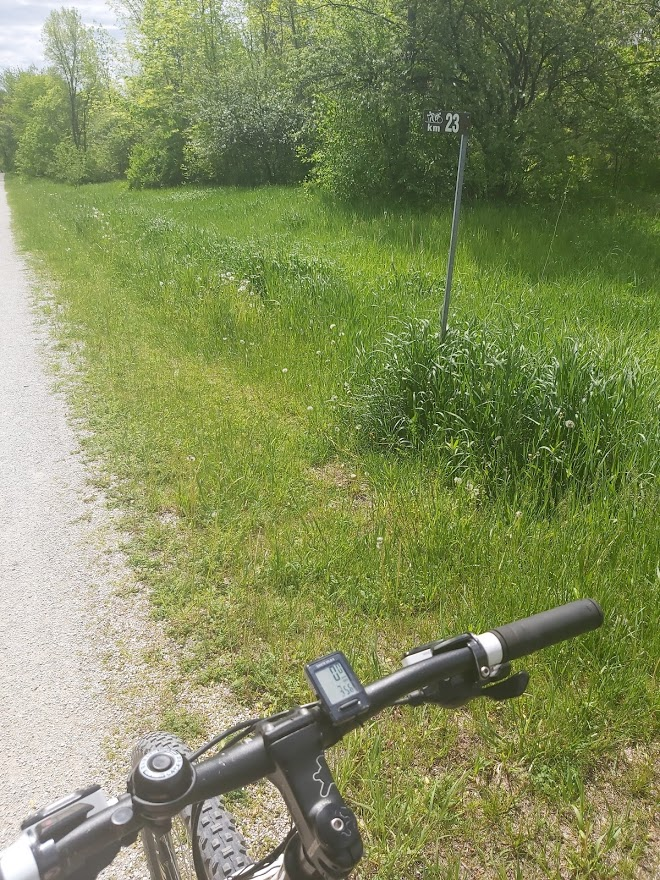
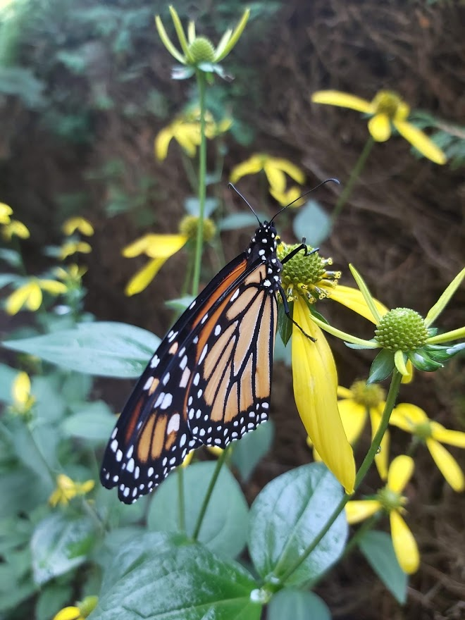
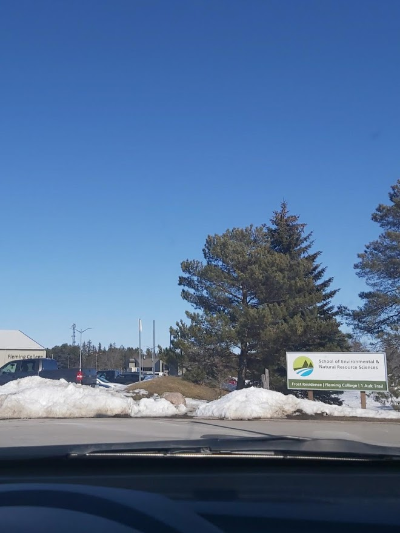
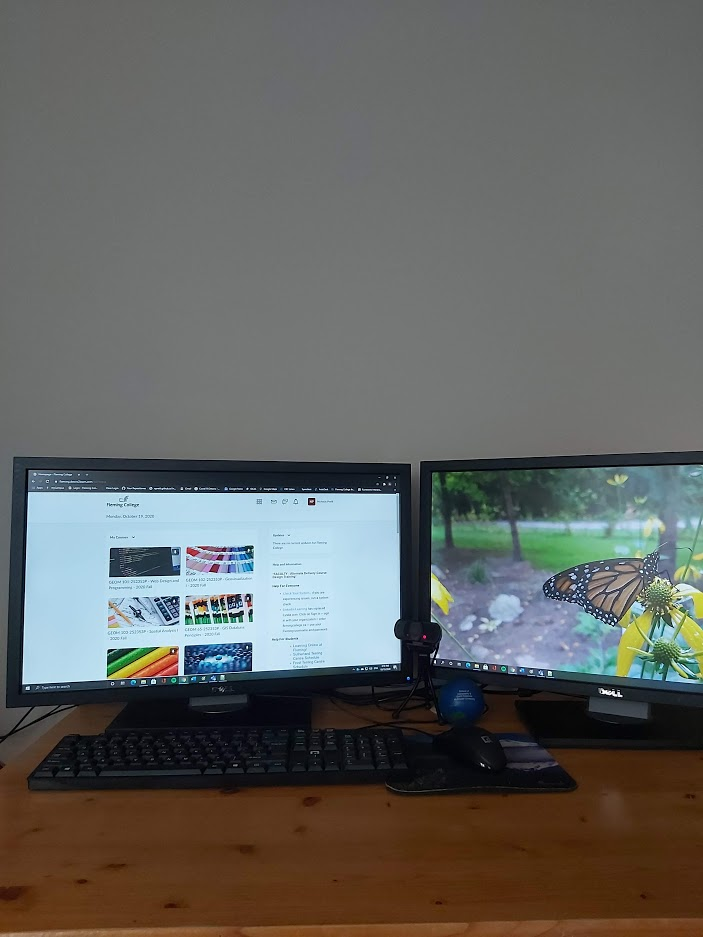

My acoustic guitars, which I try to play whenver I get the chance (October 19, 2020)

The Georgian Trail at dusk, looking east towards Christie Beach Road in Meaford, Ontario (August 31, 2020)

The Georgian Trail in the Town of the Blue Mountains, Ontario (June 1, 2020)

Biking in the Town of the Blue Mountains, Ontario (June 1, 2020)

A monarch that I found as a caterpillar around Labour Day weekend, and later released as a butterfly (Septemher 25, 2020)

A look back at the Frost Campus on open house day just prior to the onset of the COVID-19 pandemic (March 7, 2020)

Where I'm at these days. (October 19, 2020)